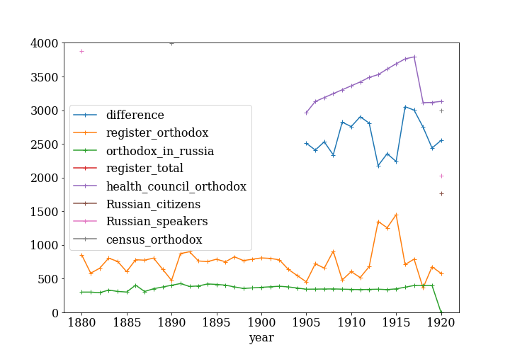

Missing orthodox population in the poll tax register of Vyborg 1880-1917
Antti Härkönen
2021-04-21
Introduction
Background
- Vyborg was part of the autonomous Grand duchy of Finland from 1812 to 1917
- The city had a large Orthodox minority, of which 90% were Russians
- Vyborg was a mid-level hub of commerce and migration in the central place system
- Vyborg connected Eastern Finland to St. Petersburg
Research problem
- Original idea was to determine change of segregation, but…
- Problems with data quality
- Determining how much population actually changes is necessary!
Sources
Parish records
- Most not available
- Vyborg health council reports total population by denomination in yearly reports
- Only available 1905-
Sources for migration
- Lutheran parish in St. Petersburg
- Poll tax register and parish registers both unreliable due to migration
Poll tax registers
- For taxation, also record for voting rights and property ownership
- Senate degree in 1878: from 1880 onward poll tax registers should have columns for non-lutherans
- Religion recorded until 1920s
Problems with sources
- Poll tax register numbers for orthodox population are inconsistent
- Total numbers of orthodox fluctuate too wildly to be real
- Some households with Russian names are marked Orthodox in some years and not in other years
Time series of orthodox population (1)

Time series of orthodox population (2)
Method
Time series analysis
- Statistical methods for working with time series data
- Common problems:
- spectral analysis (finding repeating patterns)
- shift point analysis (finding a point when a chance happens)
- autoregression models (how much previous observations affect next observation)
- moving average methods
- combinations of the above, e.g. ARMA
Bayesian Linear Regression (1)
- Linear model approximates real changes suitably well
- A basic regression model is used to determine the parameters for the whole orthodox civilian parish of Vyborg
- The results are parameters describing the smaller orthodox population within the city
Bayesian Linear Regression (2)
- Some years, the orthodox Vyborgians living in St. Petersburg are counted in the number of the orthodox
- A binary latent variable z
- z is a vector with an element for each year
- equals 1 when the non-resident people are counted in the totals, 0 otherwise
Full model
Python modules used
- pymc3 for specifying Bayesian models
- arviz for visualising results of Bayesian computations
- pandas and numpy for managing data
- matplotlib for plotting
- daft for DAGs
Results
- 1880-1905
- no orthodox growth within city
- 1906-1917
- growth rate of orthodox parish: 2.3% per annum
- growth rate of orthodox living in city: 5.1% per annum